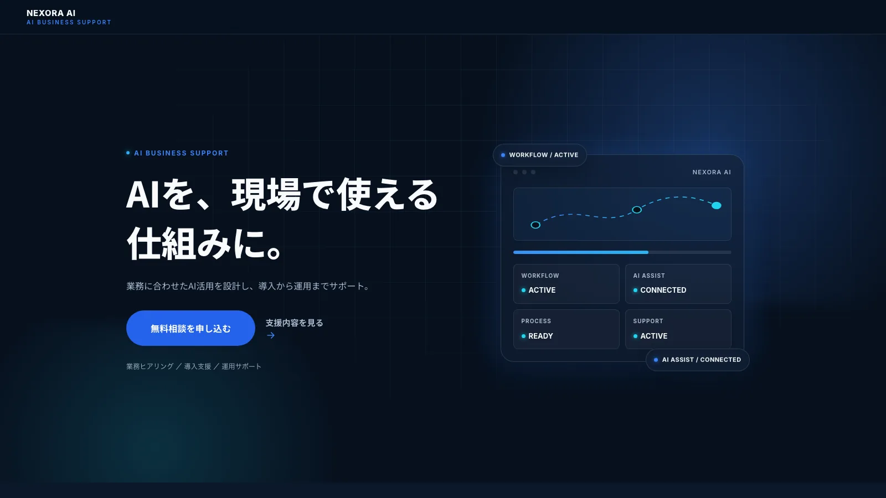

LP DESIGN / LP PRODUCTION自主制作・架空案件
LP DESIGN / LP PRODUCTION自主制作・架空案件
FLEXIA PERSONAL GYM
忙しい会社員をターゲットにした架空のパーソナルジムLP。ターゲット分析、LP戦略、構成、ライティング、デザイン設計、画像制作、HTML/CSS/JavaScript実装まで一貫して制作しました。
制作範囲: ターゲット分析 / LP戦略設計 / 構成 / LPライティング / デザイン設計 / 画像制作 / HTML・CSS・JavaScript実装 / レスポンシブ対応 / QA / アクセシビリティ調整 / WebP最適化
使用技術: HTML / CSS / JavaScript
LP DESIGN / LP PRODUCTION自主制作・架空案件
LUMIEL ENGLISH
忙しい25〜39歳の会社員・英会話初心者をターゲットにした架空のオンライン英会話LP。無料体験レッスンへの申込みを目的に、ターゲット分析、LP戦略設計、構成作成、ライティング、デザイン設計、画像制作、HTML/CSS/JavaScript実装まで一貫して制作しました。
制作範囲: ターゲット分析 / LP戦略設計 / 構成作成 / LPライティング / デザイン設計 / 画像制作 / HTML・CSS・JavaScript実装 / レスポンシブ対応 / QAレビュー
使用技術: HTML / CSS / JavaScript

LP DESIGN / LP PRODUCTION自主制作・架空案件
NEXORA AI
AI活用を検討する中小企業の経営者・業務責任者・管理職をターゲットにした架空のAI業務効率化支援LP。業務ヒアリングから導入・運用支援までを分かりやすく伝えるBtoB SaaS系デザインで、ターゲット分析、LP戦略設計、構成作成、ライティング、デザイン設計、HTML/CSS/JavaScript実装まで一貫して制作しました。
制作範囲: 企画 / ターゲット分析 / LP戦略設計 / LP構成 / LPライティング / デザイン設計 / HTML・CSS・JavaScript実装 / レスポンシブ対応 / QAレビュー
使用技術: HTML / CSS / JavaScript
Personal Project
珈琲舎 灯(Web制作サンプル)
大阪の架空コーヒースタンドを想定して制作した店舗サイトです。LPではなく店舗紹介サイトですが、HTML/CSS/JavaScriptによるレスポンシブ制作・公開までを自主制作したサンプルです。
SEOライティング有料note
社会人におすすめの英語勉強法｜初心者が今日から始める5ステップ
英語学習を始めたい社会人を想定し、「何から、どの順番で勉強すればよいか」という検索意図に沿って制作したSEO記事です。
担当範囲: 検索意図の整理 / SEO記事構成作成 / 本文執筆 / 編集 / 重複表現の整理 / ファクトチェック / 最終校正
使用ツール: ChatGPT
SEOライティング有料note
AI副業の始め方｜初心者におすすめの仕事と案件獲得までの5ステップ
AIを使って副業を始めたい初心者を想定し、仕事の選び方から案件獲得までを5ステップで整理したSEO記事です。
担当範囲: 検索意図整理 / 競合調査 / SEO記事構成作成 / 本文執筆 / 編集 / 重複整理 / ファクトチェック / 最終校正
使用ツール: ChatGPT
SEOライティング有料note
AIライティング副業の始め方｜初心者が案件獲得を目指す5ステップ
AIライティングで副業を始めたい人に向けて、案件探しから納品前チェックまでを5ステップで整理したSEO記事です。
担当範囲: 検索意図整理 / 構成作成 / 本文執筆 / 編集・重複整理 / ファクトチェック / 最終校正
使用ツール: Claude Code
note運用・SEO有料note
noteでSEOを意識した記事を書く方法｜初心者向け5ステップ
note特有の仕様と一般的なSEOライティングの考え方を分けて解説した、初心者向けの5ステップ記事です。
担当範囲: 検索意図整理 / 構成作成 / 本文執筆 / 編集・重複整理 / ファクトチェック / 最終校正
使用ツール: Claude Code
note運用・SEO有料note
note有料記事の作り方｜初心者が公開までに確認しておきたい5ステップ
有料記事の価格設定・無料/有料の境界設計・公開前チェックまでを整理した、この記事自体を有料(100円)で販売しているSEO記事です。
担当範囲: 検索意図整理 / 構成作成 / 本文執筆 / 編集・重複整理 / ファクトチェック / 最終校正
使用ツール: Claude Code
SEOライティング有料note
ライティング副業で使えるChatGPTプロンプトの作り方｜初心者向け5つのコツ
副業ライティングで使えるプロンプト作成のコツを5つ紹介するSEO記事です。
担当範囲: 検索意図整理 / 構成作成 / 本文執筆 / 編集・重複整理 / ファクトチェック / 最終校正
使用ツール: Claude Code
AI活用・仕事効率化有料note
ChatGPTで仕事を効率化する方法｜初心者が今日から使える5つの活用法
日常業務でのChatGPT活用法を5つの切り口で紹介するSEO記事です。
担当範囲: 検索意図整理 / 構成作成 / 本文執筆 / 編集・重複整理 / ファクトチェック / 最終校正
使用ツール: Claude Code
お金・家計・資産形成有料note
新NISAの始め方｜初心者が知っておきたい5つの基本
金融庁の公式情報をもとに、新NISA制度の基本を5つのステップで整理したSEO記事です(有料100円)。
担当範囲: 検索意図整理 / 構成作成 / 本文執筆 / 編集・重複整理 / ファクトチェック / 最終校正
使用ツール: Claude Code
キャリア・転職・働き方有料note
在宅ワーク(テレワーク)の始め方｜初心者が知っておきたい5つの基本
厚生労働省の公式情報をもとに、テレワークの基本と労働条件の注意点を整理したSEO記事です(有料100円)。
担当範囲: 検索意図整理 / 構成作成 / 本文執筆 / 編集・重複整理 / ファクトチェック / 最終校正
使用ツール: Claude Code
お金・家計・資産形成有料note
ふるさと納税の始め方｜初心者が知っておきたい5つの基本
総務省・国税庁の一次情報をもとに、控除の仕組みと手続き方法を整理したSEO記事です(有料100円)。
担当範囲: 検索意図整理 / 構成作成 / 本文執筆 / 編集・重複整理 / ファクトチェック / 最終校正
使用ツール: Claude Code
SNS運用・個人発信・マーケティング有料note
個人でSNS発信を続けるコツ｜初心者が継続するための5つの基本
SNS発信を継続したい初心者に向けて、無理なく続けるための基本を5つのステップで整理したSEO記事です。
担当範囲: 検索意図整理 / 構成作成 / 本文執筆 / 編集・重複整理 / ファクトチェック / 最終校正
使用ツール: Claude Code
子育て・教育・学び直し有料note
大人の学び直し(リスキリング)の始め方｜初心者が知っておきたい5つの基本
社会人のリスキリングの始め方を5つのステップで整理したSEO記事です。
担当範囲: 検索意図整理 / 構成作成 / 本文執筆 / 編集・重複整理 / ファクトチェック / 最終校正
使用ツール: Claude Code
旅行・日本文化・地域情報有料note
国内一人旅の始め方｜初心者が知っておきたい5つの基本
一人旅を始めたい初心者に向けて、計画から当日までの基本を5つのステップで整理したSEO記事です。
担当範囲: 検索意図整理 / 構成作成 / 本文執筆 / 編集・重複整理 / ファクトチェック / 最終校正
使用ツール: Claude Code
AI活用・仕事効率化有料note
ChatGPTを使った資料作成の始め方｜初心者が今日からできる5つの基本
資料作成にChatGPTを活用する基本の流れを5つのステップで紹介するSEO記事です。
担当範囲: 検索意図整理 / 構成作成 / 本文執筆 / 編集・重複整理 / ファクトチェック / 最終校正
使用ツール: Claude Code
健康・美容・メンタルケア有料note
ストレスセルフケアの始め方｜初心者が今日からできる5つの基本
公的情報をもとに、日常でできるセルフケアの基本を5つのステップで整理したSEO記事です。
担当範囲: 検索意図整理 / 構成作成 / 本文執筆 / 編集・重複整理 / ファクトチェック / 最終校正
使用ツール: Claude Code
キャリア・転職・働き方有料note
転職活動の始め方｜初心者が知っておきたい5つの基本
転職活動が初めての方に向けて、進め方の基本を5つのステップで整理したSEO記事です。
担当範囲: 検索意図整理 / 構成作成 / 本文執筆 / 編集・重複整理 / ファクトチェック / 最終校正
使用ツール: Claude Code